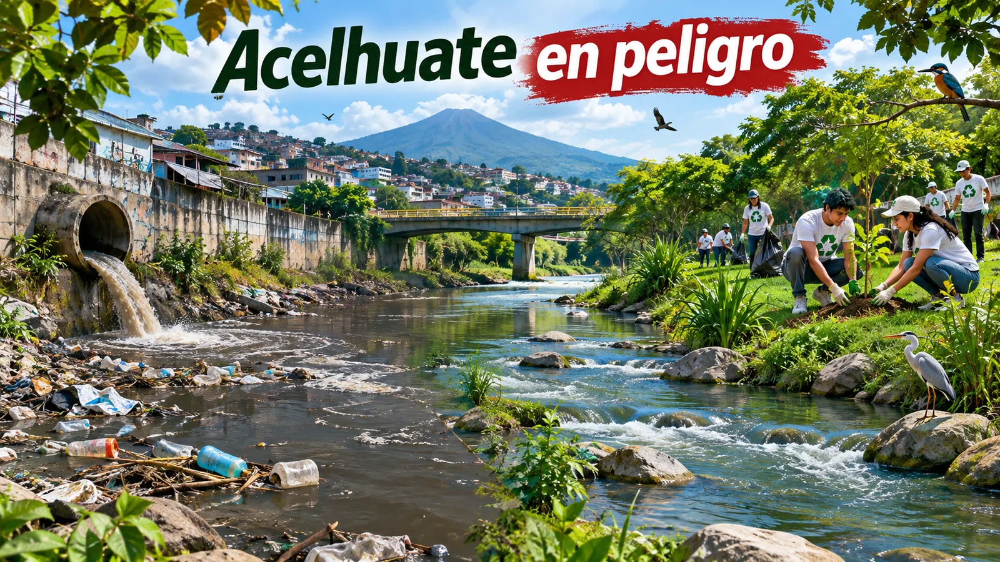

Revisión documental
Consulta de fuentes institucionales, documentos técnicos y materiales educativos.
Transparencia académica
Esta sección permite identificar quién elaboró el portal, cómo se organizó la información y cuáles son sus alcances.
Proyecto académico
Facultad de Ciencias Naturales y Matemática · Escuela de Matemática · Licenciatura en Informática Educativa, modalidad a distancia.
Metodología
Consulta de fuentes institucionales, documentos técnicos y materiales educativos.
Separación entre antecedentes históricos, anuncios institucionales y datos del inventario 2025.
Organización por preguntas, conceptos, relaciones causa–efecto y actividades formativas.
Uso de fotografías documentales, diagramas e ilustraciones identificadas como representaciones.
Construcción responsiva con HTML, CSS y JavaScript; publicación mediante GitHub Pages.
Prueba de navegación, recursos multimedia, enlaces y evaluación interactiva.
Alcances y límites
Referencias principales · APA 7
Los enlaces llevan a los documentos o páginas institucionales disponibles.
Agencia Española de Cooperación Internacional para el Desarrollo. (2025, 31 de enero). La Cooperación Española y la Autoridad Salvadoreña del Agua presentaron el Plan de Saneamiento del Río Matalapa y Acelhuate.
Abrir fuente ↗Autoridad Salvadoreña del Agua. (2025). Inventario de vertidos y saneamiento en Matalapa y Acelhuate [Mapa narrativo].
Abrir fuente ↗Ministerio de Medio Ambiente y Recursos Naturales. (2011). Análisis rápido de la situación ambiental dentro de la subcuenca del río Acelhuate.
Abrir fuente ↗Ministerio de Medio Ambiente y Recursos Naturales. (2011). Elaboración de ruta crítica recomendada al MARN para la intervención y descontaminación de la subcuenca del río Acelhuate.
Abrir fuente ↗Servicio Nacional de Estudios Territoriales. (2005). Evaluación de la calidad del agua del río Acelhuate y propuesta de descontaminación.
Abrir fuente ↗Créditos visuales
Las imágenes conceptuales generadas con apoyo de inteligencia artificial se reconocen en sus pies de imagen. No se atribuyen a un lugar o evento real del Acelhuate.
Las fotografías documentales externas se presentan con autor, fuente y licencia cuando esa información está disponible.
